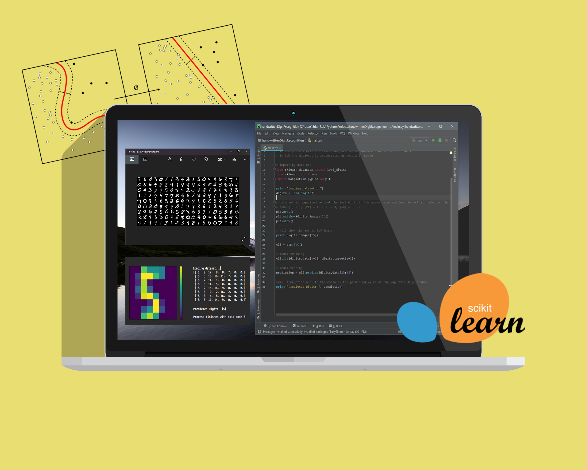

Projects

Web Scraping Web Scraping is a technique used to extract large amounts of data from a particular website; in this case we extract book reviews. The output is then a polarity which is interpreted as a positive or negative.

Digit Recognition Artificial Intelligence project that implements a machine learning classification model -support vector machine- to predict the value of a handwritten digit through supervised learning.

Sentiment Analysis Python natural language processing project, using Tweepy (API) to gather sentiment from recent tweets based off a keyword. Whether the said expression is negative or positive, it provides valuable insight for companies and brands.